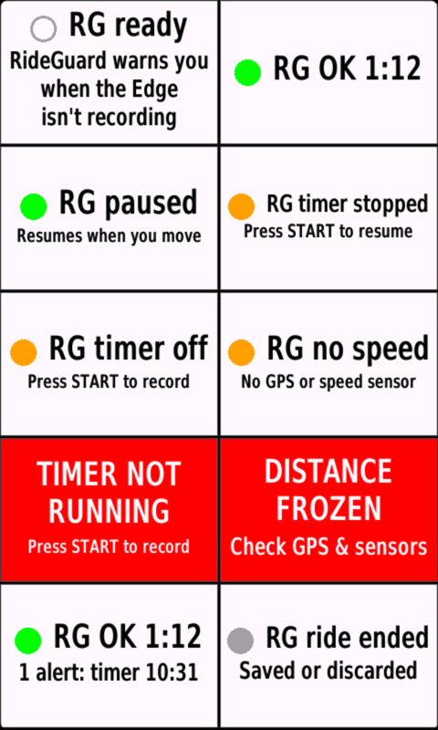
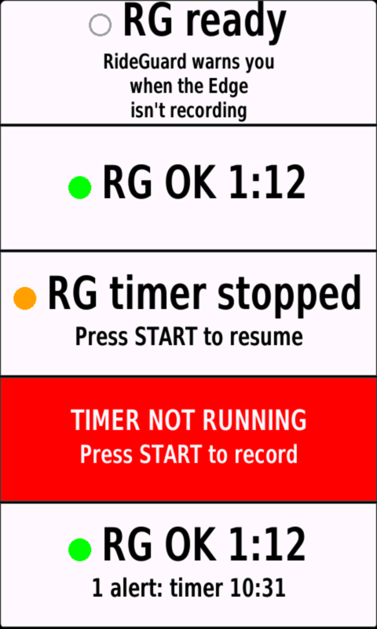

RideGuard for the Garmin Edge 1050
A data field that tells you, while you are still riding, that your bike computer has stopped recording.


Why it exists
On 3 October 2026 my Edge 1050 logged a timer stop two minutes into a three-hour, 65 km ride and never started again. The screen kept counting distance, so nothing looked wrong. I found out at home: the saved ride was two minutes long.
Whether that was a stray touch or a fault in the Edge, I can't tell. Either way, nothing warned me. RideGuard is the warning.
What it does
RideGuard is a Connect IQ data field. It sits on a data page next to the Edge's own fields and runs alongside the stock ride software, on every page and in every timer state. Once a second it looks at the timer, your speed, the ride distance and your sensors. It raises three alerts:
Timer not running
You are moving faster than 10 km/h for 30 s and the timer is stopped, paused or was never started. Repeats every 60 s until you press Start.
Distance frozen
The timer is running and you are moving, but the ride distance has not changed for 60 s. Repeats every 60 s.
HR or power lost
A sensor seen earlier in the ride has been missing for 60 s. Three beeps a minute apart, then silent; the field stays red until the sensor is back.
Each alert beeps, turns the field red and asks the Edge for a pop-up box over whatever page you are on.
What you see
| Field shows | Meaning |
|---|---|
RG ready | No ride yet. Short help pages rotate underneath. |
RG OK 1:12 | Recording. The time is the Edge's own timer. |
RG paused | Auto-pause at a standstill. Normal, and never an alarm. |
RG timer stopped | You stopped the timer and the ride is still open. Press Start when you ride on. |
RG timer off | You are moving but never pressed Start. |
RG no speed | No speed for 10 s, so RideGuard can't watch. It says so instead of showing green. |
TIMER NOT RUNNING | One of the three alerts, on a red field, with what to do. |
RG ride ended | The ride was saved or discarded. |
What it does not do
- It does not keep a copy of the ride. I record every ride on a second device as well.
- It does not fix or change the Edge. It only watches and warns.
- It is not in the Connect IQ store. It is sideloaded over USB.
How it is built and tested
- The alert rules and the ride lifecycle are plain logic with no device calls, so every rule and threshold is unit-tested in the Connect IQ simulator: 68 tests, plus 41 Python tests for the Mac-side tools.
- On my machine the suite also replays my own rides second by second, 305 tests in all. The lost ride must raise the timer alert; a normal ride and eight later rides must stay silent. Those recordings are personal and are not published.
- The display measures its text and picks fonts to fit, because an Edge 1050 field can be anything from 239×158 to 480×800 pixels.
- A fault inside the field shows
RG errorinstead of crashing it, because a crashed watchdog is a silent one.
Status
It was made for one device and one rider. A Mac companion that archives rides and flags broken ones (GarminGuard) is planned and not built.
Reading, not contributing
This is a personal project, published so others can read it. Issues are switched off and pull requests are not monitored. No open-source licence has been chosen, so the code is not licensed for reuse.
The source, the install steps and my notes on what a Connect IQ data field can and can't do on an Edge 1050 are in the repository's README.md and RideGuard/README.md.